Easy State is a simple and extensible visual state machine editor. It provides the framework to quickly sketch out complicated behaviors. If you want to learn about the system from the ground up read on! But if you want to jump right in and get your hands dirty I recommend jumping straight to the Tutorials section.
One of the only MonoBehaviors in this asset is the state machine component you add onto the object you are hoping to control. That state machine object acts as the updater to the state machine. It knows nothing about the inner workings of the behavior its only job is to connect any necessary dependencies the context might have and then update the machine at a user defined interval. It can have one or more Behaviors under its control at once. In its simplest terms a Behavior is just a group of States.
A State must have the following :
It may also contain one or more actions that get executed upon entering the state. The state is explicitly dependent on the context it is given.
The Context is the anchor for the whole system. The context should be used to keep track of all the important information that the state machine system needs to know to operate. The system has been designed with a context driven approach. Everything else in the system relies on the validity of the context. It acts as the eyes and ears of the system.
Actions are the doers in the system. They act on the information that is stored in the given context. They should be the only part of the system that is actively updating data.
Conditions should function as validators. They act as forks in the road. As such they should only read context data and not alter it. Doing this will ensure a separation of concerns and make debugging a little more simple.
Check out System Design for more info on each of these components.
There are two main editor tools when using EasyState. The main Editor is where you design your behaviors using the visual node editor. Then there is the Context Wizard which is used to create Contexts, Actions, and Conditions. Both of these tools were designed to be as simple and efficient as possible without sacrificing flexibility.
The window can be found under the 'Window/EasyState/Editor' tab at the top of Unity.The window is a draggable/dockable and behaves in the same way as other Unity windows like 'Scene' and 'Game' work.
 TIPS
TIPS
Make sure each behavior has a unique name. As naming a behavior the same name as an old behavior will overwrite the old behavior.
A State Context is required before you can add any nodes to a behavior. The context is used like a filter to help ensure you aren't using conditions or actions that were meant for different contexts.
If you are wanting to have a slightly different version of an existing behavior. Load the existing behavior make your modifications and then change the name to something unique. Doing so will create a new behavior.
This editor allows the user to pan and zoom. To pan left click on the background and drag. Left click to select a node and then left click and drag to move the node around the editor window. You can zoom the editor in and out by using either the mouse scroll wheel or the '+' and '-' keys on your num-pad. To add nodes to the editor right click on the background. Doing so will open a context menu. Select 'Add Node' and it will create a node where your mouse is located.
Note : In order to add nodes to a behavior a context must be selected.
All nodes share the following functionality:


This node only has one property which is to set its name. By convention the name is set to "Entry", but it can be anything you want. Any leaf nodes will transition back to this state after execution. This will also always be the first state that gets executed on a given behavior and therefore cannot be deleted.
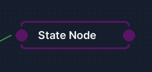
State Name Nothing special here just helps keep track of which state is which but is not used as an identifier so multiple states can be named the same thing although, that is not advised.
Add New Action Button Just click it and use Unity's object picker to select the action you want executed when this state becomes active.
Leaf State If this is set to true there will be an implicit unconditional transition back to the entry state. The same functionality could be achieved by marking the state as a cycle state then creating an unconditional transition back to the entry node but marking the state as a leaf state makes for a cleaner editor.If set to true it will also set the cycle state to true. A state can be a cycle state and not a leaf state but cannot be a leaf state without being a cycle state. Also note that if a state is a leaf state it cant have any other transitions added to it.
Cycle State If this is set to true it will signal the StateMachine to yield a frame after executing this frame. This might be useful when the actions on a state are expensive or you would just like to move forward a frame before moving to the next state.
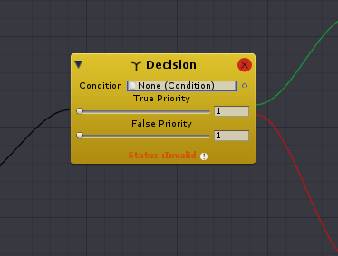
This is the standard transition node. The black line is always tied to the source state. The green line is tied to the state that will be chosen if the condition evaluates as true. The red line is tied to the state that will be chosen if the condition evaluates as false.
Condition Use Unity's object picker to selected the condition you want evaluated.
True Priority If the condition returns true this choice will be given this priority. In the case of multiple transitions evaluating as true the transition with the highest priority(lowest number) will be chosen.
False Priority If the condition returns false this choice will be given this priority. In the case of multiple transitions evaluating as false the transition with the highest priority(lowest number) will be chosen.
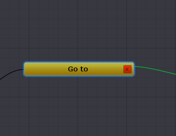
This is the simplest of all nodes. It has two lines where black represents source state and green represents destination state. Using this node always chooses the connected destination state as the next state. If you use this transition you are not allowed to have any other transitions from that source state.

The Context Wizard is used to make the Actions, Conditions, and Contexts. Actions and Conditions require a Context. A Context holds the data that Conditions need to evaluate and the data Actions need to 'act' on.
There are a few configurable options in the wizard that mostly have to do with where the files that are being created are being saved. The default folder structure is explained in the EasyState Database Section. The only other option lets you decide if you want to use default namespaces or not. By default each file that you create is associated with a context and it uses a unique namespace to encapsulate classes that belong to that namespace. By default the name of the namespace is "(ContextName)FSM".
Tip Pay attention to the save folder path to find out where the generated scripts and assets are being stored.
This is the tab that should be used to create a context. You can name your context whatever you like. By convention the name should end in 'Context' but that is not a requirement. You can click the "Add Property" if you know that your particular context is going to require certain properties. You will need to provide the Type (i.e. int,string, etc) and the property name. If you know that a property in your context is going to need to depend on a value given to it by the associated state machine check the "Tie to property" box. For example lets say that you wanted to store a variable of type Transform named "EnemyTransform". Well if you enabled the "Tie to property" option it will create a public property name "EnemyTransform". It will then set the property to be equal to the "EnemyTransform" variable stored in the context. Therefore giving you a way to set context properties at runtime or in the inspector. Of course more values can be added to the context after creation this is merely meant to be a time saving option. When you have named your context and added the desired properties you might notice a info box that tells you what files you will create when you create a new context.
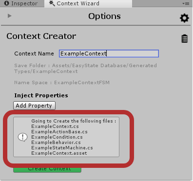
Each time you create a context EasyState generates six files that help keep things statically typed. The following types are created :
Why are all these files created? As previously mentioned actions and conditions are explicitly dependant on the contexts that they are given. Therefore to keep things as type specific as possible these companion types are created. It also has the benefit of creating a safer experience when using the state machine editor because you can filter actions and conditions by what context they depend on.
These two sections function almost identically to each other. All you need to do is select the Context you want to bind the condition or action to and then name it something sensible. Click the "Create" button and it will generate an action or condition with the correct custom type that is linked to the selected context. You can also inject logic in the foldout by that name. This works best with very small amounts of logic because there is no editor support so long lines of code can be hard to read and are prone to error. If no logic is injected the method will throw a NotImplementedException.

This is an example state machine that was created when you completed the first tutorial. It is linked with a context named "FirstContext". For each context that a user creates a custom state machine type is created. This is the component that you place on the GameObject you are trying to control. This component acts as a container for all machines you wish to have running on the object it is attached to. Although a StateMachine can have multiple machines running at the same time it was designed so that each machine is referencing the same Context. If that is not the behavior you desire you can add a second StateMachine component which will reference a unique context. By default the StateMachine will start updating all the machines it is running on Awake, but if you wish to start them manually you can un-tick that option. Also by default we use instance data of the context instead of the original source. When this box is checked it will clone the context it was given and use the clone for the duration of its life cycle. If this is not the desired behavior just un-check this option. Clicking open context will simply display an inspector for the context that is tied to the state machine. Giving an easy way to jump between machine and context and alter variables on the fly.
Each custom StateMachine has three methods of note:
StartOnAwake is true this will get called after all machines have complete their first update loop.A Machine is comprised of the following properties:
MachineUpdater which is fully explained hereA state is defined by having zero or more actions and at least one transition. But can have many transitions. A state only has one public method UpdateState(StateContext context). It will iterate through all of its actions giving them a reference to the context object and allowing them to act. Only after all the actions have been executed does it then evaluate the transitions. It iterates through all the transitions and picks the highest rank result and returns that state back to the controller object. A state has a property named isCycleState. This is used to tell the state controller that this state should be the last state to execute on the given frame.
A transition is a simple object that has the following properties:
Condition
A State to go to if that condition is false
A State to go to if that condition is true.
It also has a ranking to rank how important the transition is. This allows for states to have multiple transitions. Say for example, if your AI is tired you want it to rest and if its being chased you would want it to run away. Obviously you would want your AI to run away even if it was tired. One way to choose between those two different transitions would be to rank the running away transition as having a higher priority than the resting transition. Also note the lower numbers indicate higher importance. So the transition with the lowest number (highest rank) would be chosen first.
All actions are derived from the base abstract class ActionBase, which inherits from Unity's ScriptableObject. Doing so allows us to create pluggable actions that can be reused in different behaviors.
ActionBase only defines one void method which is Act(Context context). This gets called when the state connected to this action is attached to gets called. It is wise to try and make these actions as independent entities that only get information from the context object. It is also highly recommended that you do not store variables inside your actions. Actions should be completely stateless on their own and only act on the state that is given them by the Context object. If you do store variables in your actions since actions inherit from ScriptableObject you might be mutating data that is necessary somewhere else.
All conditions are derived from the base abstract class Condition which inherits from Unit's ScriptableObject. Doing so allows us to create pluggable conditions that can be used in different behaviors.
Condition only defines one method which returns a boolean result named Decide(Context). All decisions should use the context object to return true or false. Again you should not store any variables in a condition, as this will introduce bugs. Instead store the variables that you need in the Context object.
This is more of an idea than anything. Out of the box this is an empty class aside from a couple built-in methods. It is supposed to be up to the developer to populate this class with all the information that states require to operate(i.e. playerTransform, enemyTransform etc.). A tip when using contexts is to keep stats as a separate idea from contexts. Odds are you will want to duplicate the stats and not the contexts. Duplicating contexts will cause you to run into all sorts of headaches.
This is a simple component that works in conjunction with the StateController object. It's only job is to make the StateController update at a user defined interval. It has the following settings:
The MachineUpdater has the following important methods:
While using the Easy State you will generate an assortment of scripts and assets. By default they will all be stored in a folder that will be named EasyState Database. While using EasyState you will be unable to get rid of this folder.
Deleting the root database folder is an effective way to reset your database.

When your project compiles EasyState creates a variety of folders to store generated scripts and assets. The main folder has four sub-folders within it. They are as follows:
Behaviors
This stores all saved behaviors regardless of context.
Generated Assets
This is where all scriptable objects that are created in relation to the actions and conditions that you create. This folder also has three sub-folders within itself, but the divisions are self evident.
Generated Types
This is where all the generated scripts are stored. This is slightly different than the 'Generated Assets' folder because for each unique context that you create it will create a sub-folder by that same name and store the related 'Actions' and 'Conditions' with in that sub-folder. In the example image we had created a Context named 'FirstContext'. Therefore, sub-folder by that name was created within the 'Generated Types' folder.
Settings
This folder holds all the necessary files for keeping track of the editors states and user settings. Therefore, this folder can largely be ignored by the user.
(Time to complete : 5 minutes)
This tutorial will show you the ropes of the editor. By the end of it you will have created your first behavior which will log alternating messages to the console.
Open Context Wizard.

Create a context named "FirstContext".

Set Action context to 'FirstContext' and create Action Named "HelloAction". Injecting the following logic :
Debug.Log("Hello!!");

Set Action context to 'FirstContext' and create an 'Action' named "GoodbyeAction". Injecting the following logic :
Debug.Log("Goodbye!!");
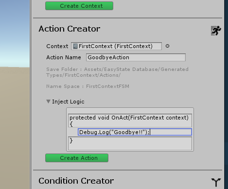
Set Condition context to 'FirstContext' and create a 'Condition' named "RandomChoice".Injecting the following logic :
return Random.Range(0.0f,1.0f)> 0.5f;

Open the Easy State Editor.

Name Behavior "First Behavior" and set context to 'FirstContext'.

Add the first node.
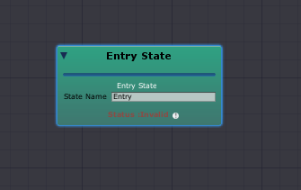
Add second node and name it "Hello".
Add third node and name it "Goodbye". 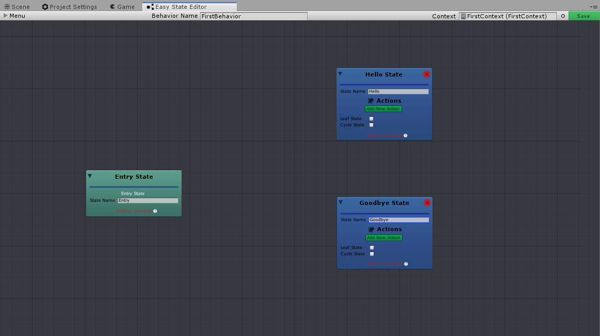
Select Entry node and right click on it. Select make transition and then click on the Hello World State node. 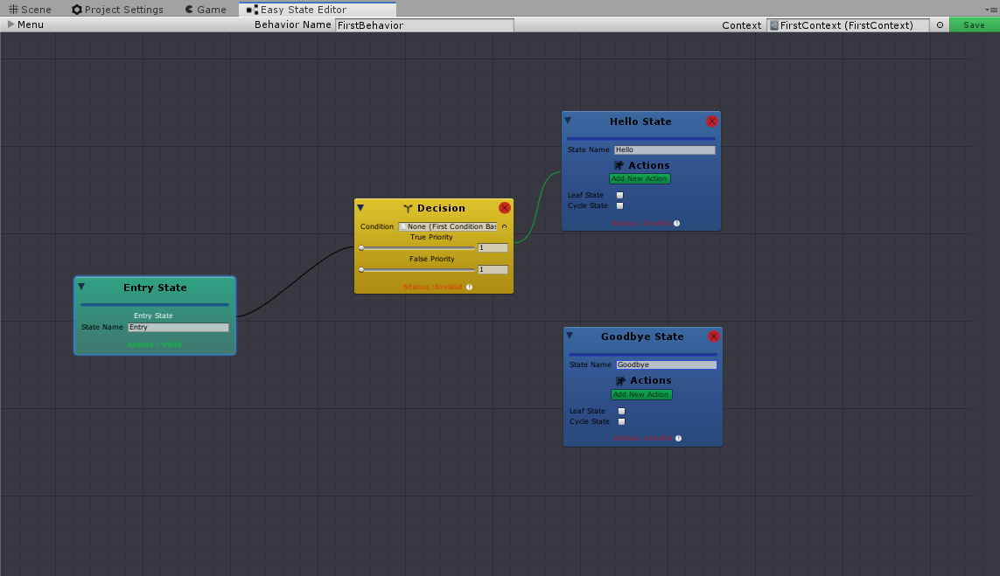
Select the decision. Right click and set false state to the Goodbye World State node.
Set the condition of the decision node to the "Random Choice" condition. 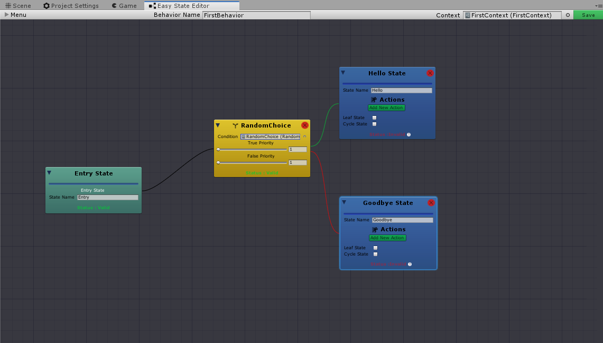
Set the "Leaf State" checkbox to true on both Hello World and Goodbye World States.
Click the "Add New Action" button on the Hello State and pick the "HelloAction" as the action.
Click the "Add New Action" button on the Goodbye State and pick the "GoodbyeAction" as the action. 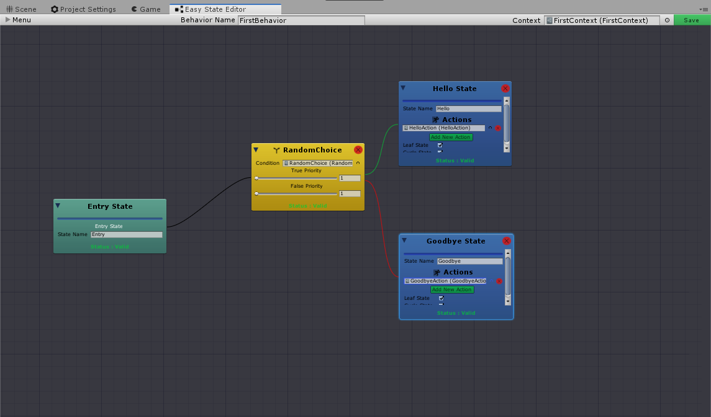
Click the "Save" button under the menu foldout. You should see the message "Behavior Saved.".
Next, add an empty GameObject to your scene in unity.On that GameObject add a FirstStateMachine component.
Set the Machines size to one.
Expand Element0 under the machines foldout. Set the Behavior property of that element to the behavior we just created.

Click 'Play' in Unity.You should start receiving alternating messages in the console. 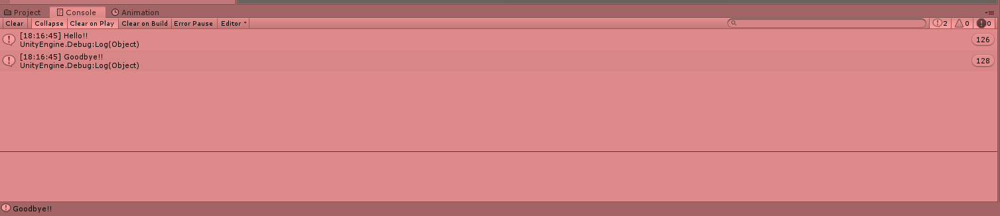
(Time to complete 15 - 20 minutes)
This will be a slightly more ambitious project than that last tutorial. Since this project aims to be slightly more complicated it is recommended that you complete the first tutorial to get used to using the interface. The goal of this project is to make a simple game where a player can move and fly around like a bird above the ground. The game will contain two types of AI. The first AI will act as prey for the player. The other will try to eat the player. The player must avoid the AI that is hunting him and eat the AI that is trying to avoid him.
Desired Prey AI Attributes:
Desired PlayerHunter AI Attributes:
For added simplicity the code has been written for you. To see a detailed explanation of the included code look here. The code that has been included is not production ready it is intended to display potential uses of the asset. This tutorial will explain how to create five behaviors that will produce the above described AI. You can either use the following images and descriptions as a means to building the behaviors or follow the step by step directions that will follow the descriptions.
There will be three different contexts created that we will use to compose the entire AI.
Animal Context This context is a base context that both of the other contexts will rely on. It contains information that would be useful to both predator and prey. (i.e. references to own transform and some constraints like speed, current speed, etc).
Prey Context This context inherits from AnimalContext and adds some prey specific information.(i.e. normal speed and fleeing speed).
PlayerHunter Context This context also extends the Animal Context and adds several properties like player last seen time and bored timeout.
Locomotion
There will only be one behavior that is based on the Animal Context. It will be called "Locomotion" that both predator and prey will utilize to move around. It is very simple it simply checks to see if it has arrived at it's current target. If not it moves closer to it by a speed that has been given to the context.

Prey Target Scanner
The Prey Context will have two behaviors that depend on it's information. The first one is called PreyTargetScanner which is the most simple behavior possible. It is separated from other behaviors to demonstrate the fact that it is possible to run processes at different rates on the same gameobject. Therefore when doing an expensive action like scanning your environment you can set this to happen at a lower interval than some more necessary task.

Prey Target Updater
The second behavior that is tied to the Prey Context is called PreyTargetUpdater. It's job is to make the prey wander around the map unless the player gets too close at which point it should flee away from the player.

Hunter Scanner
The PlayerHunterContext will also have two behaviors tied to it. The first one is called Hunter Scanner which does essentially the same thing as the Prey Target Updater but is used a little differently to maintain the last seen property that the hunter holds. This behavior purposely uses two transitions from a single state to demonstrate using priority. If you examine this double transition you will be able to see that the most important factor in the transition is if the hunter can currently see the player. Using the given priorities the following behavior emerges. If the hunter can see the player no matter what it will always update the current target of the hunter to be the player. If the player isn't seen but has been found it will skip to idle. If the player isn't seen and hasn't been found then it will scan the environment for the player.

Hunter Chase
This behavior is responsible for driving the predator when the player has been spotted. It will go to the last place the player has been seen. If it looses sight of the player it will keep moving towards the last place it saw the player until the time since the player was last seen is larger than the boredTimeout value. At which point it will return to the place it was spawned.

These five behaviors are all you need to achieve the desired AI behavior.
Assets/EasyState/Demos/.Decision node to HasReachedTarget.Decision node to the "Move" state.MoveTowardsTarget.ScanForPredators to the "Scan" state.RunAway action.ResetSpeed action.PickRandomTarget action and set that state as a leaf state.HasReachedTarget.Decision to the "Idle" state.CanSeePredator.Decision node to the "Wander" state.PlayerHunter.HasFoundPlayer.CanSeePlayer.ScanForPlayer action to the "Scan" state.TargetPlayer action to the "UpdateTarget" state.IsBored.CanSeePlayer.GoToSpawnPoint action to the "Leave" state.TargetPlayer action to the "UpdateTarget" state.Locomotion,HunterScanner, and HunterChaseHunterScanner machine to be CustomRate with a refresh rate of 0.5.Locomotion, PreyTargetUpdater,PreyScanner.PreyTargetUpdater and PreyScanner to be CustomRate with a refresh rate of 0.5;Game Restarter.cs
When active this script listens for the key 'R' to be pressed at which point the level is reloaded.
Game Starter.cs
When active this listens for the space key to be pressed at which point it sets the time scale to one.
Player Controller.cs
This controls all the simple functionality that is required for the player to operate.
Simple Follow.cs
This is used on the main camera to make it follow the player around the level.
Go to Spawn Point.cs
This is used by the animal context and it is used to set the current target to be equal to wherever the spawn point is.
Move Towards Target.cs
This simply moves the stored transform a fixed distance towards the current target which is dictated by the current speed property.
Pick Random Target.cs
This will pick a random point inside a circle that is dictated by the wander radius value. It will then set the current target to be that given point.
Scan for Player.cs
A primitive sphere cast that determines if the player is in range. The radius of the sphere cast is set by the perception range.
Target Player.cs
This updates the current target to be the point where the player was spotted. It also updates the last seen time.
Reset Speed.cs
This is used to set the speed at which the prey is moving back to its normal speed. After it feels like it has safely escaped a player.
Run Away.cs
This is a simple script that sets the current target to be a target 4 meters away in the opposite direction of the player. It also sets the current speed to be equal to the fleeing speed.
Scan for Predators
Like Scan for Player this to uses a sphere cast with a range dictated by the value of its perception radius looking for the player.
Has Reached Target.cs
Returns whether or not the player is currently at its current target.
Can See Player.cs
Uses a raycast and height of the player's position to decide if the player can be seen.
Has Found Player.cs
This is used so if the hunter has found the player it will stop using sphere casts to look for it.
Is Bored.cs
This is used to determine whether or not the hunter should give up chasing the player.
Can See Predator.cs
Prey in this game have the potential to be able to sense more than one predator at a time. Therefore they use a list to store those references. This merely checks to see if there is anything in that list.